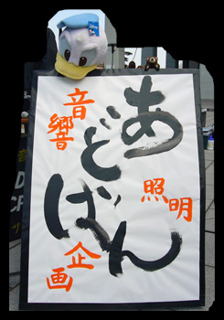
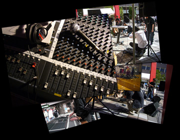
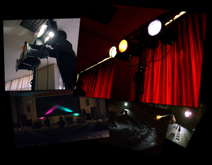
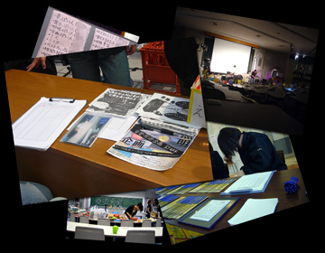

FRESHMAN
新入生のみなさんご入学おめでとうございます!
Advanced Creatorsでは1年を通して新入部員を募集しています。
当サークルへの入部を考えている、入部するかは分からないけれど多少興味のある、そんな方はとりあえずこのページを読んで参考にしてみてください。
このページの目次
Advanced Creatorsってどんなサークル?
Advanced Creators (通称: アドバン)は、ライブやイベントの音響・照明・企画を行っている、東京工科大学公認サークルです。
学内では他サークルのライブや演劇のイベント、また学外では八王子や立川でのイベントなどで活動をしています。
他サークルや学外から依頼を受けてイベントに参加したり、自分たちでもイベントを企画したりもしています。
そんな1年中ライブやイベントだらけの楽しいサークルです。
音響・照明・企画って?
音響
アーティストのライブや劇団の演劇、街中のステージなどではスピーカーから大きな音が流れていますよね。
このスピーカーから流れてくる音を聴いて、わたしたちはイベントを楽しんでいるのです。
自分の耳と感性を頼りにマイクやミキサーなどの音響機材を使って、見に来てくれたお客さん全員に最高の"音"を届けてあげる、それが音響の仕事です。
照明
真っ暗な中ではステージ上のプレーヤーやMCの様子がよく見えません。
上で紹介したイベントでは、たくさんの照明がステージを明るく照らし、色とりどりの光がステージを鮮やかに飾っています。
"光"を自在に操ってステージを美しく演出するのが照明の仕事です。
企画
ライブやイベントは誰かが企画しなければ実現できません。
1からイベントを企画して運営したり、ミニゲームを企画してステージに立ったり、サークル内のイベントでみんなを盛り上げたりと、さまざまな企画をしています。
自分たちの手でイベントを"創る"ことができるのが企画です。
いつ、どこで活動しているの?
イベントは主に休日に行われます。
なのでイベントのある休日は、その会場で活動しています。
大学の教室を借りて行うこともあれば、八王子や立川などに機材を持って行って活動することもあります。
平日は部室でイベントの準備をしたり、先輩後輩入り交じって雑談をしたり、機材を使ってで好きな音楽を流したりしています。
イベントの予定はこのサイトのScheduleのページに随時掲載していくので、そこで確認してみてください。
どんなイベントがあるの?
2013年度の主なイベントを紹介します。
- 4月
- 新入生歓迎会、赤平 新歓ライブ、新入生説明会、ReceptionParty
- 5月
- 赤平ライブ、学生天国、スポーツ大会、軽音楽部 新入生ライブ
- 6月
- 交流会、軽音楽部 春の定期審査ライブ、大江戸舞祭、新☆強騎団舞台公演、立川いったい祭、府中わんぱく相撲
- 7月
- オープンキャンパス、MINAMINO SUMMER BREEZE CONCERT
- 8月
- オープンキャンパス、バーベキュー、前期打ち上げ
- 9月
- 夏合宿、赤平ライブ
- 10月
- 紅華祭、MASSIチャリティ音楽祭、帝京アクションクラブ舞台公演、JAZZin府中
- 11月
- 新☆強綺団 第18回公演、軽音楽部 冬の定期審査ライブ、音樂祭
- 12月
- 劇団こねこめにすたん12月公演、クリスマス会、忘年会
- 2月
- スキー合宿、Red & Blue Wind Ensenble
- 3月
- 追いコン、プチ合宿、劇団こねこめにすたん＆新☆強綺団合同公演、Beat、神風ライブ、赤平ライブ
昨年度アドバンといっしょにイベントを行った、主な学内サークル
入部するには?
入部しようと決めたら、部室に来るか、新入生説明会などの新入生向けのイベントに来て、現役生に入部する旨を伝えてください。
入部を決めていなくても、部室などで現役生からアドバンについての詳しい説明を聞くことができるので、とりあえず話を聞いてみて、改めて考えてみるのもいいでしょう。
なお、新歓飲み会などの連絡をするため、メールアドレスを伺っていますのでご協力ください。
 部室の場所
部室の場所
アドバンの部室はサークル棟3階の "サ-316"です。
講義棟Aと講義実験棟の間をグラウンド方面にぬけて、サークル棟の階段を下ります。
4階(紅華祭実行委員などの部室がある階)を通り過ぎてもう1つ階段を下りると3階です(軽音楽部、ロボット研究部などの部室があります)。
正面右奥の廊下を進み、奥から2番目がアドバンの部室です。
新入生説明会
教室で映像を交えながら新入生向けに説明会を開催します。
日程と会場は以下の通りです。
| 日程 | 未定 |
|---|---|
| 開始時刻 | 未定 放課後：未定 |
| 会場 | 未定 |
新人歓迎会
アドバンの新入生・現役生・OB/OGの間で交流を深めるために、アドバン総出で新入生歓迎会を開催します。
題して…
「ReceptionParty」
| 日程 | 未定) |
|---|---|
| 集合時間 | 未定 |
| 予定時間 | 未定 |
| 集合場所 | 未定 |
| 会費 | 未定 |
| 会場 | 未定 |
| 内容 | 秘密 |
アドバンに入部しようと思っている新入生はぜひ参加してみてください!
新入生同士や先輩たちの名前を覚える絶好の機会です。
- 入学式の日に出していたブースなどで連絡先を教えてくれた人には、お誘いのメールが届いていると思います。参加したいと思っている人はそのメールに返信してください。
- まだ連絡先を教えてない人は、部室や説明会に行ってみてください。現役生が対応してくれます。
講習会
今年度も講習会を開きます。
詳細は決まり次第ここにアップするので、よくチェックするようにしてください。
新入部員のみなさん向けに、アドバンの仕事のことや音響・照明のことについて講習会を開催します。
| 日程 | 未定 |
|---|---|
| 開始時間 | 未定 |
| 会場 | 未定 |
- 入部希望者は講習会に来てください。
- 都合の悪い方は、部室などで現役生に問い合わせてみてください。
補講など何かしらの対応を検討します。 - 主な連絡はメールにて行います。
質問と回答
イベントには毎回参加しないといけないのですか?
アドバンではイベントごとに参加者を募集するので、自分の予定に合わせて参加するイベントを決めることができます。
平日もイベントの準備をするときは、スタッフ同士で予定を合わせて行います。
何もないときは自由に部室に来ることができます。
ただし、週1回の定例ミーティング(主にお昼)には全員が参加します。
バイトをしながらでも参加できますか?
はい、アドバンの部員の多くはバイトをしながらサークル活動に参加しています。
アドバンではイベントごとに参加者を募集するので、1人1人がバイトのスケジュールと上手に都合をつけて参加することができます。
他のサークルと兼部できますか?
はい、兼部するサークルとのスケジュールを上手に調整すれば、他のサークルにも所属しながらアドバンでも活動することができます。
部費を払わなければいけませんか?
いいえ、アドバンでは部員から部費の徴収を行っていません。
活動費用は学生課から支給される課外活動費でまかなっています。
仕事をするとギャラがもらえますか?
いいえ、アドバンはクライアントから音響・照明・企画の活動の給与はもらっていません。
アドバンは大学のサークルであり、非営利目的で活動しているからです。
仕事の内容は大変ですか?
いいえ、多くの部員はアドバンの仕事の内容が厳しすぎるとは感じていないようです。
アドバンは音響・照明業者ではなく大学のサークルなので、イベントを楽しんで活動しています。
しかし大学のサークルとはいっても仕事は仕事なので、相応の責任感を持って活動しています。
女の子でもやっていけますか?
はい、アドバンの部員の約半分は女性部員です。
重くて機材もありますが、重い機材は主に男性部員が運んでくれるので大丈夫です。
男性部員も無理をせず自分のできる範囲で活動しています。
未経験者でも音響や照明ができますか?
はい、アドバンのほとんどの部員は音響や照明の未経験者でしたが、今は立派に仕事をこなしています。
新入生には現役生が丁寧に教え、講習や練習する機会も設けているので、秋の紅華祭の頃には未経験者でも先輩と混ざって仕事ができるようになります。
現役生からのメッセージ
最後まで読み下していただきありがとうございました。
このページを読んでアドバンへの入部を検討してくれた方は、とりあえず部室に足を運んでみてください。
少しでもみなさんのサークル選びの参考になったなら幸いです。
最後に、現役生5名がこのページを読んでくださったみなさんへメッセージをくれましたので、それをお送りしてこのページを終了させていただこうと思います。
それではみなさん、"おつかれさまでした"!!
- 部長
- 新入生のみなさん、ご入学おめでとうございます。
アドバンでは楽しいことや辛いことなどいろいろな経験ができます。
大学生活がより充実すること間違いなし!
ステキな思い出・仲間づくりをしたいそこのあなた!
ぜひアドバンに来てください♪ - 副部長
- 普段の生活では味わえない楽しさがあります!
確かに辛いこともありますが、その分やりがいはめっちゃあります♪
自分でどんどん進んで勉強していけばたくさん知識もつきます。
アドバンに入っていろんな体験をしてください☆ - 部員 その1
- このサークルに入ったら楽しいことがいっぱい！
人生や将来のことについてもう一回考え直すいい機会になるかも☆ﾐ
いい友人と巡り合うことを切に願っています！ - 部員 その2
- 音楽好き、ライブ好き、ラブライブ好き、アニメ好き、声優好き大歓迎！
先輩や同期の仲間と一緒に盛り上がろう♪ - 部員 その3
- ライブライバー求む！！！♪
にっこにっこに〜 - 部員 その4
- ディズニー好きな子大歓迎！
一緒にランドもシー行こう！！
いろんなディズニーソング流して楽しんじゃおう